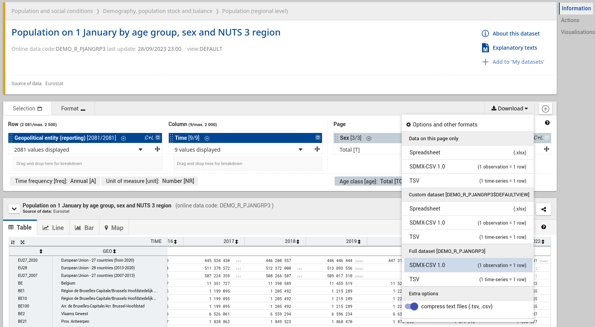

Úvod do Pandas¶
Data¶
Data naleznete v databázi Eurostat.
Vyberte Detailed datasets -> Population and social conditions -> Demography, population stock and balance (demo) -> Population (regional level) (demo_pop) -> Population on 1 January by age group, sex and NUTS 3 region (demo_r_pjangrp3).
V prohlížeči dat stáhněte plný dataset ve formátu CSV (Full dataset [MIGR_POP1CTZ] -> SDMX-CSV 1.0).

Načtěte data do pandas¶
[1]:
filename = 'demo_r_pjangrp3_linear.csv.gz'
# pozn. k 'filename':
# a) data musi byt ve stejnem adresari, ve kterem se nachazi vas notebook
# b) nebo specifikujte absolutni cestu
import pandas as pd
df = pd.read_csv(filename, compression='gzip')
Nahraná data zobrazíme.
[2]:
df
[2]:
| DATAFLOW | LAST UPDATE | freq | sex | unit | age | geo | TIME_PERIOD | OBS_VALUE | OBS_FLAG | |
|---|---|---|---|---|---|---|---|---|---|---|
| 0 | ESTAT:DEMO_R_PJANGRP3(1.0) | 28/09/23 23:00:00 | A | F | NR | TOTAL | AL | 2014 | 1430827 | NaN |
| 1 | ESTAT:DEMO_R_PJANGRP3(1.0) | 28/09/23 23:00:00 | A | F | NR | TOTAL | AL | 2015 | 1424597 | NaN |
| 2 | ESTAT:DEMO_R_PJANGRP3(1.0) | 28/09/23 23:00:00 | A | F | NR | TOTAL | AL | 2016 | 1417141 | NaN |
| 3 | ESTAT:DEMO_R_PJANGRP3(1.0) | 28/09/23 23:00:00 | A | F | NR | TOTAL | AL | 2017 | 1423050 | NaN |
| 4 | ESTAT:DEMO_R_PJANGRP3(1.0) | 28/09/23 23:00:00 | A | F | NR | TOTAL | AL | 2018 | 1431715 | NaN |
| ... | ... | ... | ... | ... | ... | ... | ... | ... | ... | ... |
| 1125890 | ESTAT:DEMO_R_PJANGRP3(1.0) | 28/09/23 23:00:00 | A | T | NR | Y_LT5 | UKN16 | 2015 | 7764 | NaN |
| 1125891 | ESTAT:DEMO_R_PJANGRP3(1.0) | 28/09/23 23:00:00 | A | T | NR | Y_LT5 | UKN16 | 2016 | 7720 | NaN |
| 1125892 | ESTAT:DEMO_R_PJANGRP3(1.0) | 28/09/23 23:00:00 | A | T | NR | Y_LT5 | UKN16 | 2017 | 7712 | NaN |
| 1125893 | ESTAT:DEMO_R_PJANGRP3(1.0) | 28/09/23 23:00:00 | A | T | NR | Y_LT5 | UKN16 | 2018 | 7659 | NaN |
| 1125894 | ESTAT:DEMO_R_PJANGRP3(1.0) | 28/09/23 23:00:00 | A | T | NR | Y_LT5 | UKN16 | 2019 | 7654 | NaN |
1125895 rows × 10 columns
Jednotlivé hodnoty¶
[3]:
# pohlavi
df["sex"].unique()
[3]:
array(['F', 'M', 'T'], dtype=object)
[4]:
# datace informace
df["TIME_PERIOD"].unique()
[4]:
array([2014, 2015, 2016, 2017, 2018, 2019, 2020, 2021, 2022])
Seřaďme hodnoty.
[5]:
import numpy as np
np.sort(df["TIME_PERIOD"].unique())
[5]:
array([2014, 2015, 2016, 2017, 2018, 2019, 2020, 2021, 2022])
Filtrování dat¶
Filtrování podle jednoho sloupce.
[6]:
df[df["geo"] == "CZ"]
[6]:
| DATAFLOW | LAST UPDATE | freq | sex | unit | age | geo | TIME_PERIOD | OBS_VALUE | OBS_FLAG | |
|---|---|---|---|---|---|---|---|---|---|---|
| 1865 | ESTAT:DEMO_R_PJANGRP3(1.0) | 28/09/23 23:00:00 | A | F | NR | TOTAL | CZ | 2014 | 5350039 | NaN |
| 1866 | ESTAT:DEMO_R_PJANGRP3(1.0) | 28/09/23 23:00:00 | A | F | NR | TOTAL | CZ | 2015 | 5361348 | NaN |
| 1867 | ESTAT:DEMO_R_PJANGRP3(1.0) | 28/09/23 23:00:00 | A | F | NR | TOTAL | CZ | 2016 | 5367513 | NaN |
| 1868 | ESTAT:DEMO_R_PJANGRP3(1.0) | 28/09/23 23:00:00 | A | F | NR | TOTAL | CZ | 2017 | 5378133 | NaN |
| 1869 | ESTAT:DEMO_R_PJANGRP3(1.0) | 28/09/23 23:00:00 | A | F | NR | TOTAL | CZ | 2018 | 5390264 | NaN |
| ... | ... | ... | ... | ... | ... | ... | ... | ... | ... | ... |
| 1110293 | ESTAT:DEMO_R_PJANGRP3(1.0) | 28/09/23 23:00:00 | A | T | NR | Y_LT5 | CZ | 2018 | 560763 | NaN |
| 1110294 | ESTAT:DEMO_R_PJANGRP3(1.0) | 28/09/23 23:00:00 | A | T | NR | Y_LT5 | CZ | 2019 | 567172 | NaN |
| 1110295 | ESTAT:DEMO_R_PJANGRP3(1.0) | 28/09/23 23:00:00 | A | T | NR | Y_LT5 | CZ | 2020 | 568823 | NaN |
| 1110296 | ESTAT:DEMO_R_PJANGRP3(1.0) | 28/09/23 23:00:00 | A | T | NR | Y_LT5 | CZ | 2021 | 558225 | b |
| 1110297 | ESTAT:DEMO_R_PJANGRP3(1.0) | 28/09/23 23:00:00 | A | T | NR | Y_LT5 | CZ | 2022 | 558098 | NaN |
579 rows × 10 columns
Filtrování podle více sloupců.
[7]:
df[(df["geo"] == "CZ") & (df["TIME_PERIOD"] == 2022) & (df["sex"] == 'T') & (df["age"] == 'TOTAL')]
[7]:
| DATAFLOW | LAST UPDATE | freq | sex | unit | age | geo | TIME_PERIOD | OBS_VALUE | OBS_FLAG | |
|---|---|---|---|---|---|---|---|---|---|---|
| 753989 | ESTAT:DEMO_R_PJANGRP3(1.0) | 28/09/23 23:00:00 | A | T | NR | TOTAL | CZ | 2022 | 10516707 | NaN |
Definujme funkci, která bude vracet počet obyvatel pro zvolený NUTS kód a rok.
[8]:
def population_by_country(code, year):
return int(df[(df["geo"] == code) & (df["TIME_PERIOD"] == year) & (df["sex"] == 'T') & (df["age"] == 'TOTAL')]["OBS_VALUE"].values[0])
population_by_country('CZ', 2022)
[8]:
10516707
[9]:
population_by_country('PL', 2022)
[9]:
37654247
Definujme funkci, která bude vracet počet obyvatel podle pohlaví pro zvolený NUTS kód a rok.
[10]:
def population_by_country_sex(code, year):
return df[(df["geo"] == code) & (df["TIME_PERIOD"] == year) & (df["age"] == 'TOTAL')][["sex", "OBS_VALUE"]].to_dict('list')
population_by_country_sex('CZ', 2022)
[10]:
{'sex': ['F', 'M', 'T'], 'OBS_VALUE': [5332932, 5183775, 10516707]}
Definujme funkci, která bude vracet počet obyvatel podle pohlaví a procentuální podíl žen pro zvolený NUTS kód a rok. Hodnota bude vrácena jako slovník.
[11]:
def population_by_country_sex_p(code, year):
res = df[(df["geo"] == code) & (df["TIME_PERIOD"] == year) & (df["age"] == 'TOTAL')][["sex", "OBS_VALUE"]].to_dict('list')
f_idx = res["sex"].index("F")
f = res["OBS_VALUE"][f_idx]
t_idx = res["sex"].index("T")
t = res["OBS_VALUE"][t_idx]
res_dict = {}
i = 0
for k in res["sex"]:
res_dict[k] = int(res["OBS_VALUE"][i])
i += 1
res_dict["F_p"] = round(f/t, 2)
return res_dict
population_by_country_sex_p('CZ', 2022)
[11]:
{'F': 5332932, 'M': 5183775, 'T': 10516707, 'F_p': 0.51}
[12]:
population_by_country_sex_p('PL', 2022)
[12]:
{'F': 19443954, 'M': 18210293, 'T': 37654247, 'F_p': 0.52}
Filtrování dat na úrovních NUTS¶
[13]:
df[(df["TIME_PERIOD"] == 2022) & (df["sex"] == 'T') & (df["age"] == 'TOTAL')]
[13]:
| DATAFLOW | LAST UPDATE | freq | sex | unit | age | geo | TIME_PERIOD | OBS_VALUE | OBS_FLAG | |
|---|---|---|---|---|---|---|---|---|---|---|
| 752124 | ESTAT:DEMO_R_PJANGRP3(1.0) | 28/09/23 23:00:00 | A | T | NR | TOTAL | AL | 2022 | 2793592 | NaN |
| 752133 | ESTAT:DEMO_R_PJANGRP3(1.0) | 28/09/23 23:00:00 | A | T | NR | TOTAL | AL0 | 2022 | 2793592 | NaN |
| 752142 | ESTAT:DEMO_R_PJANGRP3(1.0) | 28/09/23 23:00:00 | A | T | NR | TOTAL | AL01 | 2022 | 783970 | NaN |
| 752151 | ESTAT:DEMO_R_PJANGRP3(1.0) | 28/09/23 23:00:00 | A | T | NR | TOTAL | AL011 | 2022 | 109585 | NaN |
| 752160 | ESTAT:DEMO_R_PJANGRP3(1.0) | 28/09/23 23:00:00 | A | T | NR | TOTAL | AL012 | 2022 | 291325 | NaN |
| ... | ... | ... | ... | ... | ... | ... | ... | ... | ... | ... |
| 768174 | ESTAT:DEMO_R_PJANGRP3(1.0) | 28/09/23 23:00:00 | A | T | NR | TOTAL | TRC3 | 2022 | 2367645 | NaN |
| 768183 | ESTAT:DEMO_R_PJANGRP3(1.0) | 28/09/23 23:00:00 | A | T | NR | TOTAL | TRC31 | 2022 | 862757 | NaN |
| 768192 | ESTAT:DEMO_R_PJANGRP3(1.0) | 28/09/23 23:00:00 | A | T | NR | TOTAL | TRC32 | 2022 | 626319 | NaN |
| 768201 | ESTAT:DEMO_R_PJANGRP3(1.0) | 28/09/23 23:00:00 | A | T | NR | TOTAL | TRC33 | 2022 | 546589 | NaN |
| 768210 | ESTAT:DEMO_R_PJANGRP3(1.0) | 28/09/23 23:00:00 | A | T | NR | TOTAL | TRC34 | 2022 | 331980 | NaN |
1778 rows × 10 columns
Filtrujme NUTS úrovně 0 (NUTS identifikátor má přesně dva znaky).
[14]:
df[(df["TIME_PERIOD"] == 2022) & (df["sex"] == 'T') & (df["age"] == 'TOTAL') & (df["geo"].apply(lambda x: len(x) == 2))].head(10)
[14]:
| DATAFLOW | LAST UPDATE | freq | sex | unit | age | geo | TIME_PERIOD | OBS_VALUE | OBS_FLAG | |
|---|---|---|---|---|---|---|---|---|---|---|
| 752124 | ESTAT:DEMO_R_PJANGRP3(1.0) | 28/09/23 23:00:00 | A | T | NR | TOTAL | AL | 2022 | 2793592 | NaN |
| 752286 | ESTAT:DEMO_R_PJANGRP3(1.0) | 28/09/23 23:00:00 | A | T | NR | TOTAL | AT | 2022 | 8978929 | NaN |
| 752718 | ESTAT:DEMO_R_PJANGRP3(1.0) | 28/09/23 23:00:00 | A | T | NR | TOTAL | BE | 2022 | 11617623 | NaN |
| 753305 | ESTAT:DEMO_R_PJANGRP3(1.0) | 28/09/23 23:00:00 | A | T | NR | TOTAL | BG | 2022 | 6838937 | NaN |
| 753638 | ESTAT:DEMO_R_PJANGRP3(1.0) | 28/09/23 23:00:00 | A | T | NR | TOTAL | CH | 2022 | 8738791 | NaN |
| 753953 | ESTAT:DEMO_R_PJANGRP3(1.0) | 28/09/23 23:00:00 | A | T | NR | TOTAL | CY | 2022 | 904705 | NaN |
| 753989 | ESTAT:DEMO_R_PJANGRP3(1.0) | 28/09/23 23:00:00 | A | T | NR | TOTAL | CZ | 2022 | 10516707 | NaN |
| 754205 | ESTAT:DEMO_R_PJANGRP3(1.0) | 28/09/23 23:00:00 | A | T | NR | TOTAL | DE | 2022 | 83237124 | NaN |
| 758309 | ESTAT:DEMO_R_PJANGRP3(1.0) | 28/09/23 23:00:00 | A | T | NR | TOTAL | DK | 2022 | 5873420 | NaN |
| 758471 | ESTAT:DEMO_R_PJANGRP3(1.0) | 28/09/23 23:00:00 | A | T | NR | TOTAL | EE | 2022 | 1331796 | NaN |
Definujme funkci, která bude vracet zemi a počet obyvatel pro zvolený rok. Volitelné argumenty budou NUTS úroveň, pohlaví a NUTS vzor.
[15]:
def population_by_nuts(year, level=0, sex='T', nuts=None):
data = df[(df["TIME_PERIOD"] == year) & (df["sex"] == sex) & (df["age"] == 'TOTAL') & (df["geo"].apply(lambda x: len(x) == level+2))]
if nuts is not None:
data = data[data["geo"].str.match(nuts)]
return data[["geo", "OBS_VALUE"]]
population_by_nuts(2022)
[15]:
| geo | OBS_VALUE | |
|---|---|---|
| 752124 | AL | 2793592 |
| 752286 | AT | 8978929 |
| 752718 | BE | 11617623 |
| 753305 | BG | 6838937 |
| 753638 | CH | 8738791 |
| 753953 | CY | 904705 |
| 753989 | CZ | 10516707 |
| 754205 | DE | 83237124 |
| 758309 | DK | 5873420 |
| 758471 | EE | 1331796 |
| 758551 | EL | 10459782 |
| 759181 | ES | 47432893 |
| 759976 | FI | 5548241 |
| 760219 | FR | 67871925 |
| 761521 | HR | 3862305 |
| 761750 | HU | 9689010 |
| 762059 | IE | 5060004 |
| 762176 | IS | 376248 |
| 762221 | IT | 59030133 |
| 763448 | LI | 39308 |
| 763484 | LT | 2805998 |
| 763610 | LU | 645397 |
| 763646 | LV | 1875757 |
| 763727 | ME | 617683 |
| 763763 | MK | 1837114 |
| 763883 | MT | 520971 |
| 763928 | NL | 17590672 |
| 764441 | NO | 5425270 |
| 764676 | PL | 37654247 |
| 765558 | PT | 10352042 |
| 765882 | RO | 19042455 |
| 766377 | RS | 6797105 |
| 766572 | SE | 10452326 |
| 766869 | SI | 2107180 |
| 767013 | SK | 5434712 |
| 767139 | TR | 84680273 |
Podívejme se, jak vypadá rozdělení žen v ČR podle krajů.
[16]:
population_by_nuts(2022, level=2, sex="F", nuts="CZ")
[16]:
| geo | OBS_VALUE | |
|---|---|---|
| 1891 | CZ01 | 652285 |
| 1909 | CZ02 | 701332 |
| 1927 | CZ03 | 613767 |
| 1954 | CZ04 | 547501 |
| 1981 | CZ05 | 755586 |
| 2017 | CZ06 | 854930 |
| 2044 | CZ07 | 608263 |
| 2071 | CZ08 | 599268 |
Grafy¶
Podívejme se na graf znázorňující počet obyvatel pro jednotlivé země.
[17]:
data = population_by_nuts(2022)
data.plot(kind="barh", x="geo", y="OBS_VALUE", xlabel="NUTS0", ylabel="Počet obyvatel",
title=f"Počet obyvatel (2021, total)", figsize=(20, 15))
[17]:
<AxesSubplot: title={'center': 'Počet obyvatel (2021, total)'}, xlabel='NUTS0', ylabel='Počet obyvatel'>
Definujme funkci, která bude generovat graf s počtem obyvatel pro zvolený rok. Volitelné argumenty budou NUTS úroveň, pohlaví a NUTS vzor.
[18]:
def print_graph(year, level=0, sex="T", nuts=None):
data = population_by_nuts(year, level, sex, nuts)
data.plot(kind="barh", x="geo", y="OBS_VALUE", xlabel=f"NUTS{level}", ylabel="Počet obyvatel",
title=f"Počet obyvatel ({year} {sex})", figsize=(20, 15))
print_graph(2022, level=2, nuts="CZ")
Podívejme se, jak vypadá rozdělení žen v ČR podle krajů.
[19]:
print_graph(2022, level=2, nuts="CZ", sex="F")